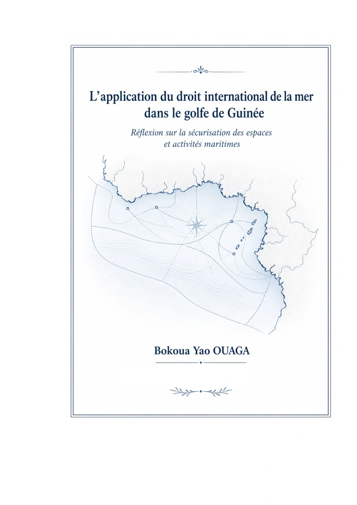

Des compétences différenciées
Eaux intérieures, mer territoriale, zone contiguë, ZEE, plateau continental et haute mer imposent des régimes juridiques distincts.


Réflexion sur la sécurisation des espaces et activités maritimes
Droit international de la mer · sécurité maritime · gouvernance · souveraineté · coopération régionale
Cette recherche part d’une question centrale : comment passer d’un droit maritime international dense à une capacité d’action juridiquement fondée, institutionnellement organisée et effectivement observable dans le golfe de Guinée ?
Le droit international de la mer répartit des compétences, définit des droits et obligations et organise la coopération. Son intérêt se mesure aussi à la manière dont ces normes sont reçues, exercées, contrôlées et coordonnées.
La recherche suit ce passage entre norme, compétence, institution, capacité, comportement, contrôle, preuve et résultat. Elle ne réduit pas la sécurité maritime à la piraterie : elle l’inscrit dans l’ensemble des espaces, activités et responsabilités qui structurent l’action en mer.
Parce qu’il concentre des enjeux de souveraineté, de sécurité, de circulation, de ressources, de protection environnementale et de coopération régionale qui rendent particulièrement visible la relation entre droit et capacité institutionnelle.
Eaux intérieures, mer territoriale, zone contiguë, ZEE, plateau continental et haute mer imposent des régimes juridiques distincts.
Navigation, ports, pêche, exploitation offshore, environnement marin, surveillance et infrastructures critiques.
Compétences nationales, administrations maritimes, contrôle, poursuite, coopération opérationnelle et articulation des responsabilités.
Code de conduite de Yaoundé, organisations régionales et cadres internationaux complètent l’action des États.
La souveraineté maritime n’est pas traitée comme une affirmation abstraite : elle est rapportée aux pouvoirs que le droit attribue, aux institutions qui les exercent et aux mécanismes qui permettent d’en apprécier l’effectivité.
Identifier le fondement juridique du pouvoir exercé selon l’espace, l’activité et l’autorité concernée.
Observer la traduction des obligations internationales dans les cadres nationaux pertinents.
Examiner l’organisation institutionnelle, les moyens d’action et les interfaces entre administrations.
Analyser ce que la coordination régionale ajoute à l’exercice national des responsabilités maritimes.
L’analyse suit une chaîne continue qui permet de distinguer les difficultés juridiques, institutionnelles, capacitaires et opérationnelles.
Traduction des obligations juridiques dans les dispositifs pertinents.
Adéquation des comportements et dispositifs aux normes applicables.
Pouvoirs de contrôle, intervention, enquête, poursuite ou sanction juridiquement établis.
Résultats et effets pouvant être objectivement documentés.
L’étude s’intéresse notamment aux articulations entre Union africaine, CEDEAO, CEEAC, Commission du Golfe de Guinée, Organisation maritime internationale et autres organisations spécialisées.
La question n’est pas seulement de savoir si les institutions existent, mais comment elles se coordonnent, quelles compétences elles mobilisent, quelles informations circulent et quels résultats peuvent être attribués aux différents niveaux d’action.
La recherche met en relation sécurité, sûreté, durabilité, souveraineté et gouvernance au lieu de les traiter comme des champs indépendants.
Cette grille vise à rendre plus précise l’identification des écarts entre ce que le droit prévoit, ce que les institutions peuvent faire, ce qu’elles font effectivement et ce qui peut être démontré.
Le Nigeria, la Côte d’Ivoire et le Cameroun occupent notamment une place importante dans l’analyse, complétée par d’autres expériences nationales et régionales pertinentes.
Ce périmètre permet de comparer la réception des normes, les architectures institutionnelles, les capacités, les pratiques et les formes de coopération sans présumer d’une homogénéité du golfe de Guinée.
Ses objets peuvent nourrir des échanges sur la gouvernance maritime, l’enseignement du droit de la mer, les politiques régionales de sécurité, l’analyse institutionnelle et les comparaisons nationales.